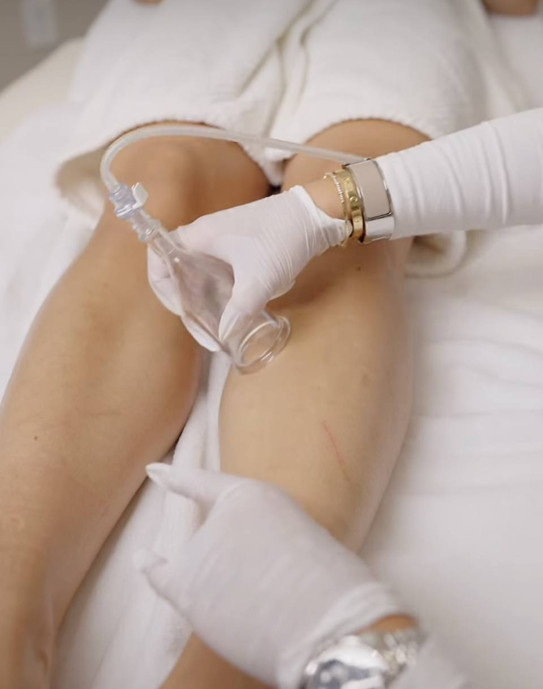

Draft for Katrina’s review. Not published.
The ABK JournalKeratosis pilaris treatment in Charlotte: how to smooth bumpy arms
What keratosis pilaris (chicken skin) is, how ABK SKIN's arm HydraFacial treatment works in Charlotte, a KP home routine and how to keep arms smooth.
From the ABK SKIN studio
Charlotte, NC · Updated

If the backs of your arms feel like sandpaper or are dotted with small, rough bumps, you are far from alone. Those bumps are very often keratosis pilaris, or KP, sometimes called chicken skin. It is common, it is not contagious and it can be frustrating, especially in sleeveless weather.
This guide explains what keratosis pilaris is, how the Keratosis Pilaris Treatment at ABK SKIN in Charlotte works, which home care products can help, and how to keep your arms smoother between appointments.
In short
- Keratosis pilaris shows up as small rough bumps, most often on the backs of the arms.
- The ABK SKIN KP treatment is a HydraFacial for your arms, followed by the ABK Body Treatment. It is 60 minutes and $350.
- No downtime is expected.
- KP is ongoing, so keeping results depends on regular treatments and a home routine.
- At home, exfoliating body care such as The Perfect Body Wash and The Perfect Body Lotion can help, along with daily sunscreen on exposed skin.
What is keratosis pilaris?
Keratosis pilaris happens when keratin, a protein in your skin, builds up around hair follicles and forms small plugs. Those plugs create the rough, bumpy texture. The bumps can be skin-colored, red or darker than your surrounding skin, depending on your skin tone.
KP most often appears on:
- The backs of the upper arms
- The thighs
- The buttocks
- Sometimes the cheeks
It is generally harmless, but many people want smoother, more even-looking skin. If your bumps are painful, spreading quickly, very itchy or you are unsure what they are, see a dermatologist to confirm what is going on.
Why KP keeps coming back
KP is ongoing. Many people find it flares in dry weather and calms down in more humid months. That is why one treatment alone will not "cure" KP. The goal is to smooth and soften the texture and then keep it that way with regular care.
The Keratosis Pilaris Treatment at ABK SKIN
ABK SKIN's KP treatment brings HydraFacial technology to the arms.
| Step | What it does |
|---|---|
| Arm HydraFacial | Cleansing, exfoliation and hydration for the arms |
| ABK Body Treatment | A body-specific step chosen for roughness, dryness and congestion |
| Details | |
|---|---|
| Time | About 60 minutes |
| Price | $350 |
| Downtime | None expected |
| Best for | Rough, bumpy arms, uneven body texture, dry and congested skin |
Prices and times come from the ABK SKIN booking menu. The booking page shows the current price before you confirm.
Your KP home routine
What you do between appointments matters as much as the treatment.
1. Exfoliate in the shower
The Perfect Body Wash ($40) is an exfoliating cleanser with 15% glycolic acid, azelaic acid and glutathione. Apply it to damp skin, lather and rinse. Glycolic acid is an alpha hydroxy acid (AHA) that loosens dead skin cells, which is exactly the buildup that makes KP feel rough.
2. Follow with an exfoliating lotion
The Perfect Body Lotion ($50) is an exfoliating lotion with 15% glycolic acid, retinol, azelaic acid and glutathione. Glycolic acid exfoliates and retinol increases cellular turnover. Because it is a strong exfoliating lotion, start slowly and stop if your skin becomes irritated.
3. Protect exposed skin from the sun
AHAs increase sun sensitivity. The Perfect Body Wash label advises sun protection and limiting sun exposure while using the product. Apply sunscreen to any treated skin that will be in the sun.
4. Be gentle
Avoid harsh scrubbing, loofahs used aggressively and picking at bumps. Picking can lead to irritation and marks.
KP routine at a glance
| When | What to do |
|---|---|
| In the shower | Cleanse with The Perfect Body Wash on damp skin, then rinse |
| After the shower | Apply The Perfect Body Lotion to KP areas, starting a few times a week |
| Daytime | Sunscreen on exposed treated skin |
| Every visit | The Keratosis Pilaris Treatment as your aesthetician recommends |
| Always | No picking; skip harsh scrubs |
Who should be careful
- If you are pregnant or breastfeeding, check with your doctor before using retinol products such as The Perfect Body Lotion.
- If you have eczema or very sensitive skin, patch test first and ask your aesthetician which products suit you.
- If you are using other exfoliants or retinoids on the same area, avoid layering too much. Read the over-exfoliation guide for signs to watch for.
How often should you treat KP?
Because KP is ongoing, regular treatments and consistent home care keep results going. Your aesthetician can recommend a schedule based on how your skin responds and the time of year. Many people focus on smoothing their arms before warm-weather months or events where arms will show.
Other body treatments at ABK SKIN
If you are working on body skin, these may also interest you:
- Back Facial: HydraFacial cleansing for breakouts and congestion on the back. The booking menu does not list a price, so check the booking page.
- Full Body Lymphatic Drainage: $200, with Katrina. Read face or full-body lymphatic drainage.
- All body treatments
The takeaway
Keratosis pilaris is common, harmless and ongoing. You cannot switch it off, but you can smooth it. At ABK SKIN in Charlotte, the Keratosis Pilaris Treatment pairs an arm HydraFacial with the ABK Body Treatment for $350, with no downtime expected. Pair it with an exfoliating home routine and daily sun protection for smoother arms that last.
Frequently asked questions
What is the best treatment for keratosis pilaris?
KP responds best to consistent exfoliation and hydration. At ABK SKIN, the Keratosis Pilaris Treatment combines an arm HydraFacial with the ABK Body Treatment, supported by an exfoliating home routine.
How much is KP treatment in Charlotte?
The Keratosis Pilaris Treatment at ABK SKIN is $350 for about 60 minutes.
Can keratosis pilaris be cured?
KP is ongoing. Treatment and home care can smooth the texture, and keeping results depends on regular care.
Does the KP treatment hurt?
The HydraFacial steps are generally comfortable, and no downtime is expected.
Is The Perfect Body Wash good for keratosis pilaris?
It contains 15% glycolic acid, an AHA that exfoliates the dead skin buildup behind rough KP texture. Use sunscreen on treated skin, because AHAs increase sun sensitivity.
Can I use The Perfect Body Lotion every day?
It contains 15% glycolic acid and retinol, so start a few times a week and build up only if your skin tolerates it. Check with your doctor first if you are pregnant or breastfeeding.
Should I scrub my KP bumps?
No. Harsh scrubbing and picking can irritate skin. Chemical exfoliation and gentle care work better.
When should I see a dermatologist for bumps on my arms?
If the bumps are painful, spreading, very itchy or you are not sure they are KP, see a dermatologist.
Questions about your skin?
Email abkskinn@gmail.com or bring them to your next appointment.